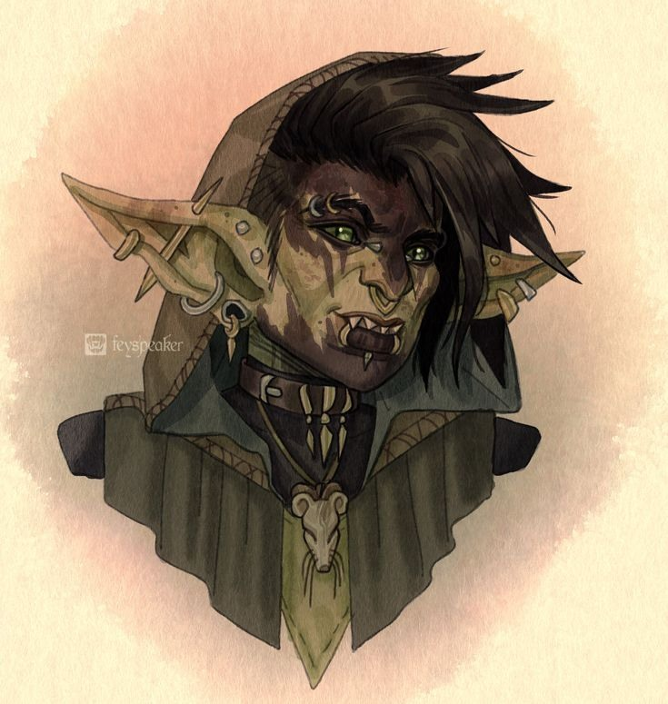

| Vaashuuk Snorr-Khal | The Sin of Sloth Goblin, the Hobgoblin Expanse as of the bottom of the Pit, the hour the Wrath woke |
| Epithet | The Sin of Sloth, given by the Sins and kept by everyone who has heard it since. He calls himself Vaashuuk the Handsome, early and often, and the few practitioners who have met his field and walked out of it say the Glass Goblin |
| Concept | Nothing ever gets finished near him: he yawns, the whole world goes thick as tar, and the harder you swing the slower you go. |
| Stat line | Stage X Realization · Master (Fire) Level 380 · Refined, in Residual Strain · Thaal-Dok, the Left-Lying Fate X Mastered, II · Spirit IX Walked 45%, III · Lenses: home + 2 |
| Combat grammar | Expenditure |
| Aura and sound | Hypnather at Realization’s clarity, pale and clean, a glassy violet gone to drowsy lavender, a syrupy shimmer like heat-haze gone thick, droplets hanging in it sound: a long jaw-cracking yawn, then a low hum like a pane of glass ringing very slowly shape: none of its own; it pools round him like bathwater and hangs level, and it goes wherever he drifts feel: cool and close, the air a little stiff on the skin, a faint smell of cold glass and hair oil; flames lean low, dust settles, steam stops rising, and everybody in the room yawns before they know why |
| How he moves | He does not stand if he can lie. |
| Stack | sustainable 600 in Projection and 560 in Longevity cap two steps on the hidden scale over the sustainable figure (to 1,200 on those two) layers: FEATHERBED, the Snooze-Glass charge, TAR TIME or the Lie-In when called |
| Bonded weapon | none; the Snooze-Glass rides at his shoulder |
| Kit | a deep olive hood and cloak or a plum velour coat with one scorched sleeve, whichever he has not paid for yet, platform boots heavy with buckles, every inch of ear pierced, and the piece people talk about first: the Snooze-Glass, a Very Rare glass bubble in brass bands that floats at his shoulder like a pet |
| Voice | ”Everythin’s a liquid if you give it long enough. I just make it real, real thick.” speaker type: a washed-up fight promoter who runs his whole business lying down |
| Next gate | Stage XI, Dissonance Catalyst: deliberately entering contact with a force that could end him and staying coherent long enough to choose how to meet it; he has never deliberately entered anything holds at Level 301, which his 380 already passes: only the Catalyst is wanting, and Residual Strain has been building in him since he passed 300 |
I. Identity
| Field | Value |
|---|---|
| Full Name | Vaashuuk Snorr-Khal |
| Pronunciation | VAAA-shook SNORR-khahl. The first vowel is held long; he will correct you until you hold it |
| Alias / Title | The Sin of Sloth · Vaashuuk the Handsome |
Also Known As
| Name | Who says it |
|---|---|
| Snorr-Khal, the sleep that held | in Vaross |
| ”the Glass Goblin” | among the few practitioners who have met his field and walked out of it |
| Field | Value |
|---|---|
| Race / Lineage | Goblin, of the deep slag-yards under Gorr-Keth; demon by corruption |
| Age | Ninety-one; the body stopped near thirty, at the Core |
| Realm / Faction | The Sins, under the Captain |
| School and sect rank | None. Self-taught by sleeping on a Wellspring |
Renown
| Among | What they say of him |
|---|---|
| public | unknown, which is how he likes it |
| army | none |
| sects | none |
| guilds | none; nobody has ever filed anything on him, because he has never done anything anybody could file |
| epithet | the Sin of Sloth, given by the Sins |
| Field | Value |
|---|---|
| Catalyst Event | The cave-in at the bellows-gang, which he heard coming and let come |
| Refusal | He will not finish a thing: not a kill, not an oath, not a love, not a job. Whatever is offered, he leaves it half-done and walks off |
| Conviction | If you never finish anything, nothing is ever your fault |
| Arc kind | Corruption, complete; flat, and very comfortable about it |
II. Soul Architecture
| Field | Value |
|---|---|
| Level | 380; it holds Realization (230) and would hold Dissonance (301) and Emanation (320), and past 300 with no Catalyst met, Residual Strain builds in him |
| Temperance Stage | X, Realization · Master. He reached the Level where he should push for Dissonance decades ago and has been lying there since |
| Path | Fate X Mastered · Spirit IX Walked 45%. No Body Path at all: the gates hold his Fortitude, Celerity, Grapple and Penetration in the low hundreds or below |
| Mastery | Fate II, Drawn: the lead; DOK is a grip he won for himself, which is neither a Work nor a blessing, so his Fate stops at II · Spirit III, Confessor: Walked a rung behind what his Level reads under Realization’s ceiling · Body: not walked, and nothing reads there, though the yawn reaches the air, the flames and the dust all the same |
| Yield (η) | 0.94, his own figure, far above what a hall expects of a Master. He wastes nothing, because wasting would mean working |
| Lenses | home Hypnather + 2 held (Nyxial, Abython), the Master’s count |
| Soul Crystal | Fire |
| Crystal State | Refined, and in Residual Strain. The calmest Crystal in the Sins, and the most worrying for it |
| Class | Thaal-Dok, the Left-Lying. Vaross: thaal, to lie, as in Thaal-Snorr, and dok with its consonant left single, so the word means one who leaves a thing lying and has not finished leaving it. The soul offered it for how he has lived: ninety years of setting something down in the road and letting somebody else run into it. |
| DOK, the grip | no blood and no blessing behind it, only the one grip a soul can win for itself, which he won lying in the coal-store, and which is DOK |
| Attraction / Obsession | Obsession Force with nothing to grip on: he never commits, so there is no gap between what he is and what he thinks he must be. The cost of that is everything else on this card |
III. Wellspring Harmonizations
| Wellspring | Folk name | Kind | Depth | Got from | What it bends in him | Note |
|---|---|---|---|---|---|---|
| Hypnather | the Sleep Crown | Spirit | baptized at its Core | — | the sleep crown: change that comes only at rest, the soul setting itself in order in the dark while nothing is asked of it | he sleeps like the dead and wakes changed, and what he does to a room is lay it down to rest until it sets like glass; the Measurewrights call it structural relaxation, a glass aging toward the order it never reached |
| Nyxial | the Nocturne Flame | Spirit | held | — | the even flame: a self that holds its level whatever the room does | why he calls himself fireproof, and why a long fire he has been holding against comes out of him all at once when it lifts; the Measurewrights read it as a great heat capacity under a feedback loop |
| Abython | the Abyssal Pulse | Wild | held | — | peace with the abyss: he matches the medium instead of opposing it | so in his own thickened air nothing is left between him and it to drag on him, and he moves as if nothing had changed; it also lets him lie on glassed air the way a swimmer lies on still water |
IV. Primary Stats
| Primary | Total | Mean |
|---|---|---|
| Vitality | 880 | 110 |
| Ardency | 720 | 90 |
| Gnosis | 780 | 97.5 |
| Dexterity | 550 | 68.75 |
| Harmonics | 2,200 | 275 |
| Resilience | 1,400 | 175 |
| Tempering | 2,050 | 256.25 |
| Dominion (seven, Throne apart) | 2,000 | 285.7 |
| Throne | not opened | · |
| Field | Value |
|---|---|
| Pool | 11,680 |
| Spent | 10,580 |
| Unspent | 1,100. He has never got round to it |
V. Sub-Stats
| Primary | ||||||||
|---|---|---|---|---|---|---|---|---|
| Vitality | Fortitude 40 | Absorption 25 | Constitution 20 | Hemostasis 35 | Regeneration 350 | Filtration 50 | Tolerance 340 | Threshold 20 |
| Ardency | Flux 150 | Alacrity 20 | Depth 100 | Penetration 12 | Compression 220 | Cascade 180 | Overchannel 3 | Density 35 |
| Gnosis | Perception 150 | Acuity 130 | Forecast 90 | Fluency 80 | Retention 35 | Analysis 100 | Cognition 185 | Vigilance 10 |
| Dexterity | Celerity 10 | Reflex 40 | Finesse 90 | Economy 150 | Evasion 70 | Grapple 5 | Feint 160 | Sequence 25 |
| Harmonics | Attunement 260 | Projection 600 | Breadth 160 | Stability 500 | Empathy 140 | Synergy 40 | Axis 20 | Suppression 480 |
| Resilience | Integrity 200 | Ward 320 | Persistence 380 | Anchoring 190 | Fortification 80 | Hardening 50 | Oath 1 | Continuity 179 |
| Tempering | Clarity 380 | Overflow 20 | Maturity 90 | Coherence 260 | Yield 120 | Ceiling 160 | Capacity 460 | Longevity 560 |
| Dominion | Radius 480 | Sovereignty 300 | Sense 200 | Gravity 500 | Pressure 340 | Command 120 | Fate 60 | Throne not opened |
Field
Note
Value
The institutions would read his means and call him middling. The fight is decided by Projection 600, Longevity 560, Stability 500, Gravity 500, Radius 480 and Suppression 480, the field-holder’s peaks. Celerity 10 is not a typo. Overchannel 3 is the most honest number on the sheet: he has never once in his life tried too hard.
VI. Force of Hand
| Measure | Figure | Feat | Carried by | Note |
|---|---|---|---|---|
| Strike Force | Flux 150, Penetration 12 | — | Flux 150 with Penetration 12 | a slap from him is a slap. He does not hit people |
| Lifting | Constitution 20 | — | Constitution | he will not lift it anyway |
| Travel speed | Celerity 10 | a stroll | Celerity 10 | — |
| Reaction | Reflex 40 | 40 to 80 ms | Reflex 40 | slow for a Master; he makes up for it by making everyone else slower |
| Durability | Fortitude 40 | — | Fortitude 40 | what keeps him alive is that nothing reaches him at speed |
VII. Aether Flow
| Measure | Figure | Note |
|---|---|---|
| EU Reserve | 194,428,500 EU | — |
| Flux Density | 2,000,000 EU/g | — |
| AU/s | 1,880,000 | — |
| Lost share at full output | 112.8 GW, by the Measurewrights’ reckoning | the six parts in a hundred that never reach the world; on a Fate soul that share ties a knot, and his are too small for him to notice |
| From full | empties in 1 minute 43 seconds at full output, Starvation at 1 minute 33 seconds | he has never once opened at full |
| Recovery | ten percent a minute at rest on ordinary ground, and asleep, under Hypnather, three times that | he is asleep a great deal |
VIII. Traits
Full accounts: Vaashuuk Snorr-Khal — Abilities
Every Trait reads at his lead Mastery, Fate II.
| Trait | Kind | Source | Path and Form | Gates | What it does | Limit | Tell | Cost | Counter | Numbers |
|---|---|---|---|---|---|---|---|---|---|---|
| TORPOR · Snaal | Primary | — | Path Spirit, turned on his own Crystal · Lens Hypnather · Form Write | none on the card | TORPOR (Vaross · Snaal). He runs as slow and cheap as a dormouse in winter, so poison crawls in him, wounds barely bleed and a nap fills him three times as fast as resting awake. | It all rests on the Crystal’s hold. A body kept at a low pressure for ninety years has never learned to bear an ordinary one. | he never hurries, even when he should | He wakes slowly: from a cold start his reactions lag, his thinking is foggy for a few breaths, and Celerity 10 means he could not run if he wanted to. | Speed and surprise. Hit him early and hard, before he has yawned, and the whole sheet is a slow, soft goblin in a big coat. Hit him early and fast, before he is awake | — |
| DOK | Secondary | — | Path Fate · Lens none, no Wellspring: a fracture feature of his own Attraction Layer, held by Obsession Force · Form Bind, turned inside out: nothing binds | none on the card | DOK (Vaross · Striking-At). Nothing he does is ever finished, so nothing can be pinned on him: a reading finds no killing, an oath finds no grip, a grudge finds no debt. | — | every verb he speaks is unfinished | Total: he cannot finish anything either. He cannot complete a kill even when he wants to; he cannot keep a promise, finish a task or hold a love to its end, and every job he is given has to be the kind that someone else finishes. | Make him finish something. Corner him with no way out but to strike to completion, or bind him to a deal he must close to survive, and the moment the act closes the Trait goes thin and every reading, oath and grudge that slid off him sticks at once. Corner him until he has to finish something | — |
| DROWSE | Passive | — | Path Fate for the reach, the Walked Spirit Path for what it does to a mind · Lens Hypnather · Form Claim, unshaped: a leak | none on the card | DROWSE (Heavy Air). Everybody within ten yards of him yawns, flames lean low, and a guard on a long watch is asleep inside the hour. | — | everyone near him yawns | Nothing, and he cannot switch it off, which makes him terrible company at parties and useless as a sentry. | Anything that wakes the body: noise, pain, cold water, a stimulant, a practitioner whose Ignivale or whose plain fury keeps the fire lit. | — |
IX. Skills and Abilities
Full accounts: Vaashuuk Snorr-Khal — Abilities
Skills
| Skill | Cues / mechanics | Learned where | Priced by (Sub-Stats) | Mark | Rank |
|---|---|---|---|---|---|
| Talking | patter, flattery, vanity, a joke when he is losing | the slag-yards, and every day since | Feint, Empathy | Mastered | Journeyman |
| Hearing a structure go | creak, settle, the change in a timber’s note before it fails | the bellows-gang | Perception, Analysis | Mastered | Journeyman |
| Bellows-work | the long even push, breath with the stroke | the bellows-gang | Economy | Held, and he will never use it again | Journeyman |
| Grooming | the crest, the claws, every piercing polished, the cloak brushed | himself | Finesse | Mastered | Apprentice |
| Holding a field | set it, leave it, lie in the middle of it; one hand for a pane, one claw for a plug | ninety years of lying in one | Projection, Longevity | Mastered | Master |
| Sleeping anywhere | on a Wellspring, on a slab of air, in a hay-barn, through a shift bell; wakes slow and comes back full | the coal-store, and the Core | Regeneration, Tolerance | Mastered | Expert |
Techniques
| Technique | Kind | Mark | Source | Path and Form | Gates | What it does | Limit | Tell | Cost | Counter | Numbers |
|---|---|---|---|---|---|---|---|---|---|---|---|
| NOTHIN’ GETS DONE | Signature art | — | — | — | — | he yawns and the world goes thick as tar: the harder you swing the slower you go | — | the yawn | He cannot finish anything, his own kills, oaths and loves included, and he cannot start anything fast; every working that wakes him properly costs him the only thing he values, which is lying still. | Hit him before the yawn. After it, come slow and breathe slow, run hot, turn one way, count the Snooze-Glass, stay between the pieces of PLAN B, walk out of the Lie-In, or corner him until he has to finish something. A judge who reads what a soul has decided it is can rule on the hole: it can crack his hold on the Sleep Crown and part the tether between his Crystal and its Wellspring in one cut, and then the Crystal leaves him and TORPOR’s long low pressure lets go like a diver hauled up too fast. | Reserve: 194,428,500 EU · Flux Density: 2,000,000 EU/g · AU/s: 1,880,000 at yield (η) 0.94 · lost share at full output: 112.8 GW by the Measurewrights’ reckoning · empty: in 1 minute 43 seconds at full output, Starvation at 1 minute 33 seconds · recovery: ten percent a minute at rest, three times that asleep · DROWSE: about ten yards, no cost · TAR TIME: a sphere forty yards across, out to a hundred and twenty, 0.3% of reserve a second, about 583,000 EU, 5 minutes 33 seconds from full · THE SNOOZE-GLASS DROP: 4% of reserve, about 7,777,000 EU, one charge, a full night’s sleep to refill · THE CHAISE: a fraction of a percent of reserve an hour · FEATHERBED: about 0.2% of reserve a minute, under his recovery, held for a week · THE LIE-IN: a hundred and fifty yards, a new working at three times its price, 3 minutes 20 seconds from full, about 972,000 EU a second · THE WAITER’S WAVE: paid inside a standing TAR TIME · THE INFINITE DO-OVER: draws his reserve in long pulls · PLAN B: leaves him gray, shaking and spent · Sound: the yawn, TAR TIME’s charge · the glass ringing, the art’s standing note and THE LIE-IN’s held one · a short hum three times over for THE INFINITE DO-OVER |
| TAR TIME | Signature Technique | Mastered | Lived · page: TAR TIME | Path Fate for the field and its reach, landing through the Shell · Lens Hypnather, with Abython for his own passage · Form Claim | none on the card | TAR TIME. He yawns, enormously, and the air goes glossy for forty yards: steam stops rising, a thrown spear slows to a walk, and whatever comes fastest hits the hardest wall. | The glass itself: it is rest laid on whatever travels through it, and heat is restlessness, the one thing in a thing that will not lie down, so heat is untouched and keeps building, and a rest that is stirred goes soft. When he drops it, everything held in it comes loose at once, and he is standing in the middle of it. | The yawn, long, loud and obvious; anyone out of the forty yards when it ends is outside the field. The big yawn, then the air goes glossy and steam stops rising | 0.3% of his reserve a second, about 583,000 EU; it holds 5 minutes 33 seconds from full. | Move slowly, which the field barely resists, or run hot, because heat will not lie down and thins it fast. Move slowly, run hot, or step out of the radius | — |
| THE SNOOZE-GLASS DROP | Signature Technique | Drilled | Lived · page: TAR TIME | Path Fate, banked in the glass overnight · Lens Hypnather · Form Claim, by way of a made thing he did not make | none on the card; it needs the Snooze-Glass | THE SNOOZE-GLASS DROP. The glass apple at his shoulder dims and falls, and a whole fresh TAR TIME opens with no yawn and no warning. One a day. | — | The bubble dimming as it falls. | 4% of his reserve, about 7,777,000 EU, one charge; a full night’s sleep to refill. | Count it: if it has dropped once today, it will not drop again. One charge, then he has to yawn like everybody else | — |
| THE CHAISE | Technique | Mastered | — | Path Fate · Lens Hypnather for the slab, Abython for the float · Form Claim | none on the card | THE CHAISE. He lies down on nothing, and it carries him wherever he leans, at a walk. | It holds his weight and nothing much more; any real heat makes it sag and drip like toffee left in the sun. | he is lying on nothing | So little it barely counts, a fraction of a percent of his reserve an hour. | heat it until it drips | — |
| THE WAITER’S WAVE | Technique | Mastered | Lived | Path Fate, a second claim made inside the first · Lens Hypnather · Form Claim | none on the card; it needs a standing TAR TIME | THE WAITER’S WAVE. One lazy hand inside the glass sets a piece of it harder: a pane a yard across in front of a face, a plug of pitch at a mouth so the next breath brings in nothing, a slab on a chest that he calls the squash and has never finished. | — | The hand, and it is a slow hand. A flat palm lifted, lazy, or one claw closing into the palm | Paid inside a standing TAR TIME. | Heat, a working that unmakes or cancels the glass at the touch, a breath kept under the pace the plug stiffens at, and his own Trait. Come slower than the glass stiffens, or break the pane with heat or with a working that unmakes | — |
| THE INFINITE DO-OVER | Technique | Held | Lived | Path Fate · Lens Hypnather · Form Claim, rocked | none on the card; it needs a standing TAR TIME | THE INFINITE DO-OVER. No yawn. He hums quick as a bellows stroke and rocks the whole field back and forth, and every swing, stab and breath inside it goes out and comes home to where it began. | The kind of motion: only what reciprocates is caught. Anything turning one way goes through and takes the loops apart behind it, and heat cannot be pushed back. | The missing yawn. No yawn; the hum goes quick as a bellows stroke, and he sweats | — | anything that turns one way, and heat | — |
| PLAN B | Technique | Held | Lived · also the second yawn | Path Fate for the reach, with the Walked Spirit Path forcing the Crown · Lens Hypnather, forced, over Nyxial · Form Claim | none on the card | PLAN B. The other yawn, the one that does not end: pieces of the world stop all the way down, cold, faceted and dead, and fire poured into them simply ends there. | It comes in scattered pieces he does not place, with plain air between, and the planes break whatever ground they pass through and drop him along with everyone else. | two claws in his mouth and a yawn that does not end | — | it comes in scattered pieces with plain air between them, and it empties him | — |
| FEATHERBED | Technique; THE CHAISE grown large and called aloud | — | — | Path Fate for the bed, Spirit for what it does in him · Lens Hypnather, with Abython’s float · Form Claim | none on the card | FEATHERBED (the Lie-Down). The air under him gels into a long clear bed, the lavender thickens into a halo of hanging droplets, and poison, bleeding and tiredness all but stop in him. | — | — | About 0.2% of his reserve a minute, under his recovery; he can hold it for a week. | TORPOR’s: inside FEATHERBED he is at his slowest to wake. | — |
Vows
| Vow | Sworn to or before | Binds and lifts | Stands |
|---|---|---|---|
| None. Oath 1; he has never finished saying one | — | — | — |
Releases
| Release | Kind | Mark | Source | Path and Form | Gates | What it does | Limit | Tell | Cost | Counter | Numbers |
|---|---|---|---|---|---|---|---|---|---|---|---|
| THE LIE-IN | the One, counting as his Second | — | — | Path Fate, the lead Path’s One · Lens Hypnather · Form Claim | none on the card | opens and powers the Domain | — | — | — | — | — |
| THE LIE-IN · Thaal-Snorr | Domain | — | — | Path Fate, opened by the One: a claim laid on the ground, on what has to be so before anything can begin · Lens Hypnather · Form Claim | none on the card; Sovereignty 300 holds it | THE LIE-IN (Vaross · Thaal-Snorr). One long yawn out to a hundred and fifty yards, and inside it nothing new can start: a fire will not catch, a fresh working costs three times its price, a blade swung from stillness begins as if through mud. | — | — | The same rise is charged to him: he cannot start anything quickly in it either, and he never does. It burns about half a percent of his reserve every second it stands, about 972,000 EU a second; 3 minutes 20 seconds from full. | Heat, a stronger Sovereignty at the edge, something already in motion before it opened, or walking out. It is beaten by heat: the claim makes everything climb three times as far before it can begin, and a thing that runs hot is already half up, so a fighter who runs hot enough lights anyway, and a Domain held against a furnace burns through his reserve fast. Bodies can simply walk out of it, slowly. | — |
| — | no other Release | — | — | — | — | none; the Fate road gives a soul the One and no more | — | — | — | — | — |
X. Spirit Axes
| Person | Bond | Axis weight | What flows across it |
|---|---|---|---|
| The Captain | employer | 20 | the one he does errands for; he complains about every one and finishes none of them himself |
| The Sins | colleagues | light | he likes them in the way he likes anything that does the work so he does not have to |
XI. Resistances
| Against | Resistance | Carried by | Note |
|---|---|---|---|
| Heat | strong | Tolerance 340 under Nyxial | ”fireproof” is his word and an exaggeration |
| Poison and bleeding | strong in practice | slowed by TORPOR | — |
| Soul-reading, oaths, grudges | slide off him | under DOK | — |
| Speed and surprise | terrible | Celerity 10, Reflex 40 | — |
| Blunt and cut | poor | Fortitude 40 | nothing usually reaches him |
| Glamour and mind-work | fair | Cognition 185 | — |
XII. Physical Description
| Feature | Description |
|---|---|
| Build | He is small even for a goblin, about half a grown man’s height, wiry and slight, long-limbed and big-footed, and he carries himself in a permanent slouch with his weight dropped on one hip. |
| Skin and claws | His skin is a mossy green mottled with dark brown and black, the dark running down from his eyes over his cheeks in long streaks like old tear-tracks and gathering in patches at his brow, his jaw and his neck, and going to polished black obsidian on the knuckles and up the backs of the fingers; the fingers end in long black claws he keeps lacquered and filed to neat points and buffs on his collar whenever he is talking. |
| Ears | His ears are long and pointed and stick out sideways through the hood, and he has pierced every inch of them he could reach: gold rings, silver hoops, bone studs and thin iron spikes driven clean through the cartilage. |
| Horns | Two short black ridged horns curl back like a ram’s from just above his hairline, hidden under the hood unless he pushes it back. |
| Hair | His hair is black and coarse and lovingly oiled, swept up and over to one side in a spiky crest that falls across his brow, and he touches it every few seconds to make sure it is still there. |
| Face and eyes | His eyes are a bright bottle green under heavy black brows, almost always half shut, with two silver rings through the left brow and a small gold stud set in the bridge of his nose; his mouth is wide and thin-lipped, two fangs showing over the lower lip, one of them gold-capped, and an iron spike through the lip below. |
| Dress | He wears a deep hood of olive wool over a long dark-olive cloak with a high stiff collar, a black shirt buttoned to the throat and a pale green silk tie knotted loose beneath it, a buckled collar of black leather round his neck, a string of yellowed fangs, and on a cord over the tie a little carved rat skull in white bone, which he will tell you, if you ask, is the only honest face in the Expanse. |
| Under the cloak | Under the cloak, slim charcoal trousers and chunky black platform boots heavy with buckles and rivets, which add three inches he will not discuss. |
XIII. Psychology
| Field | Value |
|---|---|
| Core Wound | He heard the forge-roof going a full day before it fell, and said nothing, and lay down, and everyone he had worked beside since he was six was under it by morning |
| Flaw | He will not finish anything, and he has made a philosophy out of it |
| Desire | To be left alone somewhere warm, admired, with nothing to do |
| Strength | Patience past anything; he can outwait a mountain |
| Loop | asked, agrees, half-does it, naps, someone else finishes, he takes the credit |
| Foil | Shōki, who finishes everything and has never let go of a single thing |
| Stress Default | more jokes, faster, louder; when the jokes run out, the second yawn |
Voice block
| Field | Value |
|---|---|
| Speaker type | a washed-up fight promoter who runs his whole business lying down |
| Accent | heavy, full phonetic, every second g dropped, the Vaross habit of holding a vowel long for emphasis carried straight into Common: “innnnteresting”, “Vaaaashuuk” |
| Chant tongue | Vaross; release calls in it or in plain Common, whichever is less effort |
| Lying tell | he never quite lies, because a lie would be a finished act; when he is hiding something he goes vague and drifts into the continuous tense: “I’m workin’ on it, I’m gettin’ there” |
| Notices first | whether you are better-looking than him, then how much effort you are about to cost him |
| Sentence length | long and wandering, then a short punchline |
| Contractions | always |
| Pet word | ”handsome”, to everybody |
| Never says | ”done”, “finished”, “I did it” |
| Stumbles | no; drawls |
| Stress shift | faster patter, the vowels shorten, the jokes get worse |
| Grief shift | a yawn where the grief should go, and a change of subject |
| Joy shift | stretches like a cat and says “ouuuuu” |
| How modern | casual, street, half the slang of three cities |
| Sample line | ”Everythin’s a liquid if you give it long enough. I just make it real, real thick.” |
XIV. Equipment
| Item | What it is | Grade | Rarity | Rung | Bonded |
|---|---|---|---|---|---|
| The Snooze-Glass | a riveted glass sphere the size of an apple in brass bands, floating at his shoulder, holding a frozen curl of steam and a few suspended droplets; charged overnight with one TAR TIME; Item Tier Hallowed | A | Very Rare | Fieldwinner | not bonded |
| The olive cloak and hood | fine wool, high stiff collar, the hood cut deep for the ears; plain cloth, no working; he never paid the tailor and has never finished an apology for it; plain | — | Rare | — | — |
| The rat skull | carved white bone on a cord; plain; the only honest face in the Expanse | — | Common | — | — |
| The plum coat | plum velour three sizes too big, gold frogging, a collar of long black fur, over a green silk shirt open to the breastbone; plain | — | Rare | — | — |
| The shirt, tie and collar | black shirt buttoned to the throat, pale green silk tie knotted loose, buckled black leather collar, a string of yellowed fangs; plain | — | Uncommon | — | — |
| The boots and the hat | chunky black platform boots heavy with buckles and rivets, and a stolen fur hat; plain | — | Uncommon | — | — |
| The ironwork | gold rings, silver hoops, bone studs and iron spikes through both ears; two silver rings in the left brow; a gold stud in the nose, a gold cap on one fang, an iron spike through the lip; black claw lacquer; plain | — | Uncommon | — | — |
| Item | Look | Maker’s mark | Wear and repairs | How he shows it off | What people say | Price | Other |
|---|---|---|---|---|---|---|---|
| The Snooze-Glass | clear Stannvaard glass with a faint green in its thickness, a tiny pitch-funnel maker’s mark on the lowest band, the brass buffed bright every day and one rivet missing since the day he took it | — | — | he lets it hang by his ear and glances at it as if it had said something funny | the glassblower says it was the best piece of her life and has a price posted on it in three cities, which he has heard about and is going to do something about | two hundred gold to the right thief | stolen, he says, from a Stannvaard glassblower who “was gonna throw it out anyway” |
| The olive cloak and hood | olive dyed deep and even, a band of darker stitching round the hood and the collar | — | a hand’s length of the hem was never sewn, because he walked out of the last fitting and kept walking, and he brushes the raw edge along with the rest | he flicks it so that you will see the line | the tailor in Gorr-Keth keeps the bill on his wall and adds to it every year | — | — |
| The rat skull | a rat’s face in white bone with the whiskers scratched in, fine work on the front; the back is still blank, and he says he is getting to it | — | — | — | — | — | — |
| The plum coat | the cuffs rolled four times to find his hands, the fur buffed flat on one side where he polishes his claws on it, one sleeve scorched by the Wrath in the bottom of the Pit and still smelling of it, never mended | — | — | he wore it to the bottom of Hell | it was cut for somebody much bigger, and nobody has come to ask for it | — | — |
| The shirt, tie and collar | the tie is never drawn all the way up | — | — | — | one tie has gone in two pieces to a Yukari blade, and of everything that blade did to him, the tie is what he talks about | — | the fangs came off other people’s kills, as he will tell you before you ask, since he has never finished anyone |
| The boots and the hat | the last buckle on the left boot has never been done up | — | — | he crosses his ankles in the air at eye level, so that you will see the soles | a fox-woman in a Yukari carriage wanted to squish them; the hat came off somebody on the road north of the Pit | — | — |
| The ironwork | polished every morning, the one job he does daily and has never called done | — | the top gold ring of one ear is gone, with a thumbnail of the ear, and Senna Yukari has it | — | he has started several sentences about what he will do about that | — | — |
XV. Temperance Record
Level log
| Levels | Where they were earned |
|---|---|
| to 380 | almost every Level since the Core came from contact with Wellsprings while asleep on them, which the Crystal counts and he finds hilarious |
Stage ledger
| Stage | Name | Catalyst | Bought | The story in a line |
|---|---|---|---|---|
| I to IV | — | — | — | in his sleep, on the Hypnather Core under the slag-yard, the year after the cave-in |
| V to X | — | — | — | met one by one when trouble came close enough that lying still was itself the thing that cost him, which is the only road his Crystal has ever taken |
XVI. Fracture Log
| Event | Layer | Status | What it left |
|---|---|---|---|
| The cave-in | Attraction | processed | DOK: an act left open for good, and every act after it |
| The Core | Core | reinforced | the Sleep Crown in him; a Crystal that heals while he sleeps and has never once been hurt awake |
Lore
Full account: Vaashuuk Snorr-Khal — Lore
Ties
| Person | Who they are to him |
|---|---|
| Shōki Kurenai Moto, the Sin of Wrath | the errand. The man who finishes everything, against the goblin who finishes nothing; the Wrath’s reading found a clean slate in his chest and his fire found nothing to burn by. |
| The Captain | employer, of the Sins; specific about the word alive. |
| The Sins | colleagues. Seven, give or take, all of them come out of something bad. |
| The bellows-gang of the third forge | the dead. He remembers the note in the timber, and nothing much else about them, on purpose. |